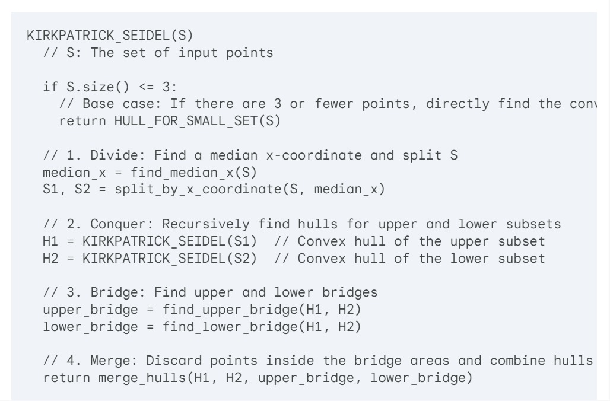
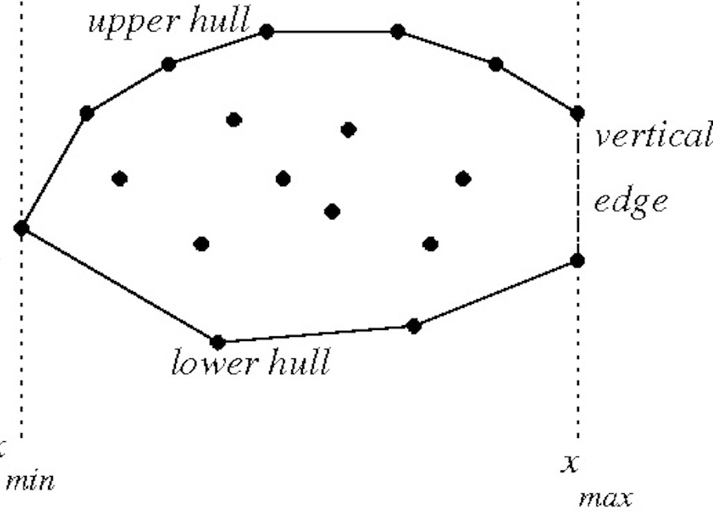

KirkPatrick-Seidel: Marriage Before Conquest
The Kirkpatrick-Seidel algorithm, often abbreviated as KPS, is a sophisticated approach to computing the convex hull of a set of points in two-dimensional space. It combines the principles of divide-and-conquer with randomization to achieve efficient performance.
The process:
- A strategist divides the battlefield in half vertically. This creates two sub-battlefields: an upper half (red points) and a lower half (blue points).
- Lieutenants take charge of their assigned sub-battlefields (upper and lower halves). Each lieutenant independently builds a defensive wall (convex hull) around the enemy positions (points) within their assigned territory. Don't worry about connecting the walls yet; focus on enclosing each set of points.
- Once the lieutenants have their walls built, it's time to connect the upper and lower halves. But there might be some "overzealous" wall sections that extend unnecessarily. Here's where the clever part comes in. Imagine special bridges (green lines) are built strategically between the upper and lower walls. These bridges help us see which wall sections are truly needed for the final perimeter.
- Analyze the bridges. Any part of the upper or lower wall that a bridge goes through is excessive and can be discarded. These sections are not required for the final perimeter because the bridge itself acts as a barrier.
- With the unnecessary wall sections removed, strategically connect the remaining parts of the upper and lower walls to form the complete defensive perimeter (convex hull) around all the enemy positions. This is the final convex hull!
The Kirkpatrick-Seidel algorithm's brilliance lies in its divide-and-conquer approach and the use of bridge concepts. By dividing the problem into smaller sub-problems and discarding unnecessary points early on using the bridges, this algorithm significantly reduces the number of points to consider for the final hull, making it much faster than simpler algorithms like Jarvis March, especially for sets with many points.

Understanding the Algorithm
- Base Case (Small Sets)
- If there are only a few points (3 or less), a simpler algorithm can efficiently calculate the convex hull directly.
- Divide
- Find the middle x-coordinate (median) of all the points in the set.
- This essentially divides the set into two halves: points with an x-coordinate less than the median go to one set (left or lower half), and points with an x-coordinate greater than the median go to the other set (right or upper half).
- Conquer
- Apply the KIRKPATRICK_SEIDEL function recursively on both halves (upper and lower sets) to find the convex hull for each subset independently.
- Bridge
- Identify two special lines (upper and lower bridges) that connect the upper and lower convex hulls. These lines are guaranteed to be outside the final convex hull.
- Merge
- Discard any points in the upper or lower hull that lie inside the area enclosed by the upper and lower bridges. These points are not needed for the final hull because the bridges themselves form a barrier.
- After discarding unnecessary points, cleverly combine the remaining portions of the upper and lower hulls to form the complete convex hull for the entire set of points. 
- Understanding the Bridge Concept is Crucial!
- The bridge concept is what makes Kirkpatrick-Seidel efficient. By discarding points based on the bridges, you significantly reduce the number of points to consider for the final hull, especially for large datasets. This makes it a much faster algorithm compared to simpler approaches like Jarvis March.

Time Complexity of the Algorithm
- Overall Complexity:
- The Kirkpatrick-Seidel algorithm has an average time complexity of O(n log h), where 'n' is the number of input points and 'h' is the number of points on the final convex hull. This makes it significantly more efficient than algorithms like Jarvis March (O(nh)) for large datasets. Why is it Faster? The key to its efficiency lies in how the bridges allow early discarding of many points. It avoids brute-force comparison of most points, leading to faster computation. Let's break down why the time complexity is O(n log h).
- Divide:
- Finding the median each time splits the set into two halves. This is similar to how algorithms like quicksort or merge sort work, which contributes to the 'log' part of the complexity.
- Conquer:
- Recursively solving smaller subproblems is where the number of points on the hull ('h') comes into play. The recursion creates roughly log h levels of subdivision. At each subdivision, we do some work proportional to the number of input points.
- Bridge & Merge:
- The process of finding the bridges and merging in each recursive step takes time generally proportional to the number of points remaining within the considered subsets.
- Average-case Scenario:
- The time complexity of O(n log h) is an average case.
- Worst-case Scenario:
- The worst-case complexity of Kirkpatrick-Seidel can still be O(n^2) in certain unusual arrangements of points. However, in practice, it generally outperforms other algorithms for most datasets.